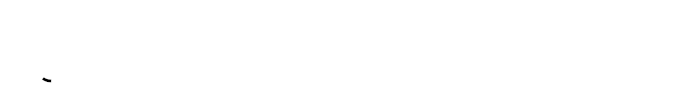

This script renders all the frames necessary to generate an animation of the path being painted.

The script is started using the Render>Path animation entry after right-clicking the target path in the Paths list menu.
The script strokes the path in Line mode (as in Edit>Stroke path), using the current foreground color.
The paths "strokes" are processed in the order in which they appear in the path data, and in the direction that they have in the path data.
If you did not create the path by hand the order and direction of the strokes may not be what you expect. Shameless plug: with my
ofn-path-edit script you can:
Also, most menus are disabled if there is not at least a layer or channel in the image. You can use a blank layer since the script will not generate one.
If you don't want a blank layer, adding a dummy channel is a better work around since you won't need to remove/add it.
New channel...If everything is disabled again, go to the Channels list and select the dummy channel again.
Processing: how the strokes are processed:
Sequential: the strokes are drawn one after the other, this is typically what is used to draw text.Parallel, same speed: the strokes are drawn at the same time, with the same growth rate. The shorter strokes are completed before the longer ones.Parallel, same duration: the strokes are drawn at the same time, but the growth rate is adjusted to the length of the stroke so that all strokes are
completed at the same time.'Steps': the number of steps in the animation to complete all the strokes.
Line width: the width of the line, in pixels.Cap style, Join style, Miter limit, and Anti-aliasing: the usual path stroking options.
Keep in mind that cap styles other than Butt extend the length of the dash by half a line width at each end.Opacity: the opacity of the rendering.Background: how each layer is filled before the path is rendered on it.Layer Name: a pattern to name the layers (see below).The layer name pattern specifies how the layers are named using specific processing data. In the pattern,
names in braces are replaced by the values of these data for the path. For instance, a pattern
of Frame-{step1}/{count} will produce the name Frame-3/50 for the 3rd step in a series of 50.
The available values are:
pathName: the name of the source pathcount: the total number of stepsstep, step: the step number.The name pattern is actually directly used as a Python format specification, so modifiers can be used. The most
useful modifier for numbers is the ability to define a minimal length with zero-padding. This is done by adding :0Nd
to the variable name in the braces, for instance {step:03d} will insert the step number on at least three digits, with zeros added to the left if necessary: 001, 013, 099, 100.